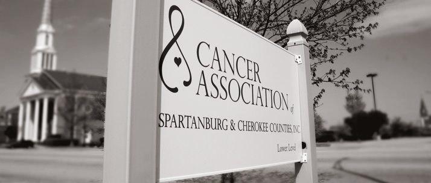
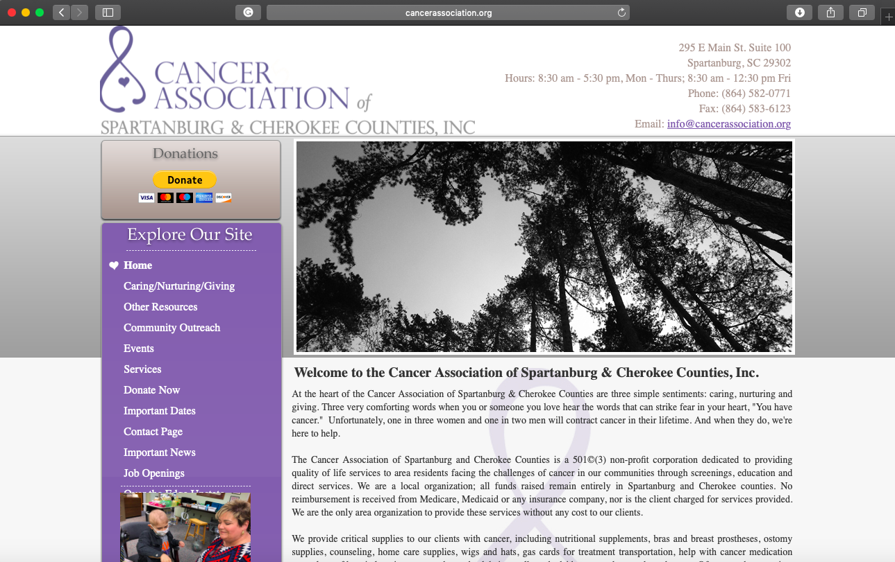

Primary Research
Screenshots of Non Profits Website and Marketing Collateral
website
The Cancer Association of Spartanburg is a non-profit organization in Spartanburg that provides services to patients suffering from cancer. The Cancer Association services include home care supplies, loans for hospital equipment, and assistance with medications. The Cancer Association is involved in many activies and events as well as presentations at clubs. Cancer Association throws free lessons like the smoking cessation class to help those from getting lung cancer. The Cancer Association is active on facebook, twitter, youtube channel, and website. Cancer Association fundraisers events in Spartanburg, the newest event being "OVER THE EDGE UPSTATE."
